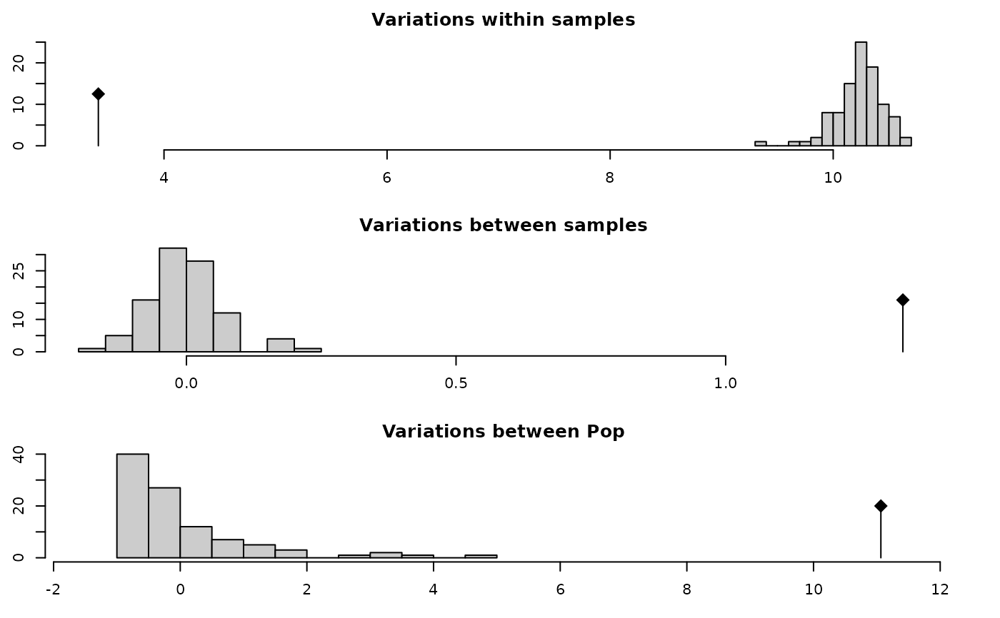

Perform Analysis of Molecular Variance (AMOVA) on genind or genclone objects.
Source:R/amova.r
poppr.amova.RdThis function simplifies the process necessary for performing AMOVA in R. It
gives user the choice of utilizing either the ade4 or the pegas
implementation of AMOVA. See ade4::amova() (ade4) and pegas::amova()
(pegas) for details on the specific implementation.
Usage
poppr.amova(
x,
hier = NULL,
clonecorrect = FALSE,
within = TRUE,
dist = NULL,
squared = TRUE,
freq = TRUE,
correction = "quasieuclid",
sep = "_",
filter = FALSE,
threshold = 0,
algorithm = "farthest_neighbor",
threads = 1L,
missing = "loci",
cutoff = 0.05,
quiet = FALSE,
method = c("ade4", "pegas"),
nperm = 0
)Arguments
- x
- hier
a hierarchical formula that defines your population hierarchy. (e.g.:
~Population/Subpopulation). See Details below.- clonecorrect
logicalifTRUE, the data set will be clone corrected with respect to the lowest level of the hierarchy. The default is set toFALSE. Seeclonecorrect()for details.- within
logical. When this is set toTRUE(Default), variance within individuals are calculated as well. If this is set toFALSE, The lowest level of the hierarchy will be the sample level. See Details below.- dist
an optional distance matrix calculated on your data. If this is set to
NULL(default), the raw pairwise distances will be calculated viadist().- squared
if a distance matrix is supplied, this indicates whether or not it represents squared distances.
- freq
logical. Ifwithin = FALSE, the parameter rho is calculated (Ronfort et al. 1998; Meirmans and Liu 2018). By settingfreq = TRUE, (default) allele counts will be converted to frequencies before the distance is calculated, otherwise, the distance will be calculated on allele counts, which can bias results in mixed-ploidy data sets. Note that this option has no effect for haploid or presence/absence data sets.- correction
a
characterdefining the correction method for non-euclidean distances. Options areade4::quasieuclid()(Default),ade4::lingoes(), andade4::cailliez(). See Details below.- sep
Deprecated. As of poppr version 2, this argument serves no purpose.
- filter
logicalWhen set toTRUE, mlg.filter will be run to determine genotypes from the distance matrix. It defaults toFALSE. You can set the parameters withalgorithmandthresholdarguments. Note that this will not be performed whenwithin = TRUE. Note that the threshold should be the number of allowable substitutions if you don't supply a distance matrix.- threshold
a number indicating the minimum distance two MLGs must be separated by to be considered different. Defaults to 0, which will reflect the original (naive) MLG definition.
- algorithm
determines the type of clustering to be done.
- "farthest_neighbor"
(default) merges clusters based on the maximum distance between points in either cluster. This is the strictest of the three.
- "nearest_neighbor"
merges clusters based on the minimum distance between points in either cluster. This is the loosest of the three.
- "average_neighbor"
merges clusters based on the average distance between every pair of points between clusters.
- threads
integerWhen using filtering or genlight objects, this parameter specifies the number of parallel processes passed tomlg.filter()and/orbitwise.dist().- missing
specify method of correcting for missing data utilizing options given in the function
missingno(). Default is"loci". This only applies to genind or genclone objects.- cutoff
specify the level at which missing data should be removed/modified. See
missingno()for details. This only applies to genind or genclone objects.- quiet
logicalIfFALSE(Default), messages regarding any corrections will be printed to the screen. IfTRUE, no messages will be printed.- method
Which method for calculating AMOVA should be used? Choices refer to package implementations: "ade4" (default) or "pegas". See details for differences.
- nperm
the number of permutations passed to the pegas implementation of amova.
Value
a list of class amova from the ade4 or pegas package. See
ade4::amova() or pegas::amova() for details.
Details
The poppr implementation of AMOVA is a very detailed wrapper for the
ade4 implementation. The output is an ade4::amova() class list that
contains the results in the first four elements. The inputs are contained
in the last three elements. The inputs required for the ade4 implementation
are:
a distance matrix on all unique genotypes (haplotypes)
a data frame defining the hierarchy of the distance matrix
a genotype (haplotype) frequency table.
All of this data can be constructed from a genind or genlight object, but can be daunting for a novice R user. This function automates the entire process. Since there are many variables regarding genetic data, some points need to be highlighted:
On Hierarchies:
The hierarchy is defined by different
population strata that separate your data hierarchically. These strata are
defined in the strata slot of genind,
genlight, genclone, and
snpclone objects. They are useful for defining the
population factor for your data. See the function adegenet::strata() for details on
how to properly define these strata.
On Within Individual Variance:
Heterozygosities within
genotypes are sources of variation from within individuals and can be
quantified in AMOVA. When within = TRUE, poppr will split genotypes into
haplotypes with the function make_haplotypes() and use those to calculate
within-individual variance. No estimation of phase is made. This acts much
like the default settings for AMOVA in the Arlequin software package.
Within individual variance will not be calculated for haploid individuals
or dominant markers as the haplotypes cannot be split further. Setting
within = FALSE uses the euclidean distance of the allele frequencies
within each individual. Note: within = TRUE is incompatible with
filter = TRUE. In this case, within will be set to FALSE
On Euclidean Distances:
With the ade4 implementation of
AMOVA (utilized by poppr), distances must be Euclidean (due to the
nature of the calculations). Unfortunately, many genetic distance measures
are not always euclidean and must be corrected for before being analyzed.
Poppr automates this with three methods implemented in ade4,
ade4::quasieuclid(), ade4::lingoes(), and ade4::cailliez(). The correction of these
distances should not adversely affect the outcome of the analysis.
On Filtering:
Filtering multilocus genotypes is performed by
mlg.filter(). This can necessarily only be done AMOVA tests that do not
account for within-individual variance. The distance matrix used to
calculate the amova is derived from using mlg.filter() with the option
stats = "distance", which reports the distance between multilocus
genotype clusters. One useful way to utilize this feature is to correct for
genotypes that have equivalent distance due to missing data. (See example
below.)
On Methods:
Both ade4 and pegas have
implementations of AMOVA, both of which are appropriately called "amova".
The ade4 version is faster, but there have been questions raised as to the
validity of the code utilized. The pegas version is slower, but careful
measures have been implemented as to the accuracy of the method. It must be
noted that there appears to be a bug regarding permuting analyses where
within individual variance is accounted for (within = TRUE) in the pegas
implementation. If you want to perform permutation analyses on the pegas
implementation, you must set within = FALSE. In addition, while clone
correction is implemented for both methods, filtering is only implemented
for the ade4 version.
On Polyploids:
As of poppr version 2.7.0, this function is able to calculate phi statistics for within-individual variance for polyploid data with full dosage information. When a data set does not contain full dosage information for all samples, then the resulting pseudo-haplotypes will contain missing data, which would result in an incorrect estimate of variance.
Instead, the AMOVA will be performed on the distance matrix derived from
allele counts or allele frequencies, depending on the freq option. This
has been shown to be robust to estimates with mixed ploidy (Ronfort et al.
1998; Meirmans and Liu 2018). If you wish to brute-force your way to
estimating AMOVA using missing values, you can split your haplotypes with
the make_haplotypes() function.
One strategy for addressing ambiguous dosage in your polyploid data set
would be to convert your data to polysat's genambig class with the
as.genambig(), estimate allele frequencies with polysat::deSilvaFreq(),
and use these frequencies to randomly sample alleles to fill in the
ambiguous alleles.
References
Excoffier, L., Smouse, P.E. and Quattro, J.M. (1992) Analysis of molecular variance inferred from metric distances among DNA haplotypes: application to human mitochondrial DNA restriction data. Genetics, 131, 479-491.
Ronfort, J., Jenczewski, E., Bataillon, T., and Rousset, F. (1998). Analysis of population structure in autotetraploid species. Genetics, 150, 921–930.
Meirmans, P., Liu, S. (2018) Analysis of Molecular Variance (AMOVA) for Autopolyploids Submitted.
Examples
data(Aeut)
strata(Aeut) <- other(Aeut)$population_hierarchy[-1]
agc <- as.genclone(Aeut)
agc
#>
#> This is a genclone object
#> -------------------------
#> Genotype information:
#>
#> 119 original multilocus genotypes
#> 187 diploid individuals
#> 56 dominant loci
#>
#> Population information:
#>
#> 2 strata - Pop, Subpop
#> 2 populations defined - Athena, Mt. Vernon
amova.result <- poppr.amova(agc, ~Pop/Subpop)
#>
#> No missing values detected.
amova.result
#> $call
#> ade4::amova(samples = xtab, distances = xdist, structures = xstruct)
#>
#> $results
#> Df Sum Sq Mean Sq
#> Between Pop 1 1051.2345 1051.234516
#> Between samples Within Pop 16 273.4575 17.091091
#> Within samples 169 576.5059 3.411277
#> Total 186 1901.1979 10.221494
#>
#> $componentsofcovariance
#> Sigma %
#> Variations Between Pop 11.063446 70.006786
#> Variations Between samples Within Pop 1.328667 8.407483
#> Variations Within samples 3.411277 21.585732
#> Total variations 15.803391 100.000000
#>
#> $statphi
#> Phi
#> Phi-samples-total 0.7841427
#> Phi-samples-Pop 0.2803128
#> Phi-Pop-total 0.7000679
#>
amova.test <- randtest(amova.result) # Test for significance
plot(amova.test)

amova.test
#> class: krandtest lightkrandtest
#> Monte-Carlo tests
#> Call: randtest.amova(xtest = amova.result)
#>
#> Number of tests: 3
#>
#> Adjustment method for multiple comparisons: none
#> Permutation number: 99
#> Test Obs Std.Obs Alter Pvalue
#> 1 Variations within samples 3.411277 -31.80386 less 0.01
#> 2 Variations between samples 1.328667 19.77920 greater 0.01
#> 3 Variations between Pop 11.063446 10.64532 greater 0.01
#>
if (FALSE) { # \dontrun{
# You can get the same results with the pegas implementation
amova.pegas <- poppr.amova(agc, ~Pop/Subpop, method = "pegas")
amova.pegas
amova.pegas$varcomp/sum(amova.pegas$varcomp)
# Clone correction is possible
amova.cc.result <- poppr.amova(agc, ~Pop/Subpop, clonecorrect = TRUE)
amova.cc.result
amova.cc.test <- randtest(amova.cc.result)
plot(amova.cc.test)
amova.cc.test
# Example with filtering
data(monpop)
splitStrata(monpop) <- ~Tree/Year/Symptom
poppr.amova(monpop, ~Symptom/Year) # gets a warning of zero distances
poppr.amova(monpop, ~Symptom/Year, filter = TRUE, threshold = 0.1) # no warning
} # }